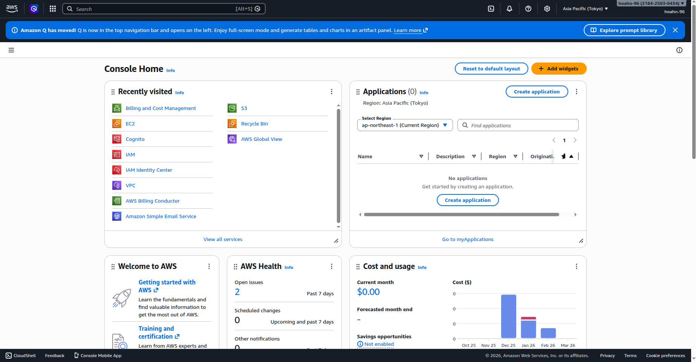
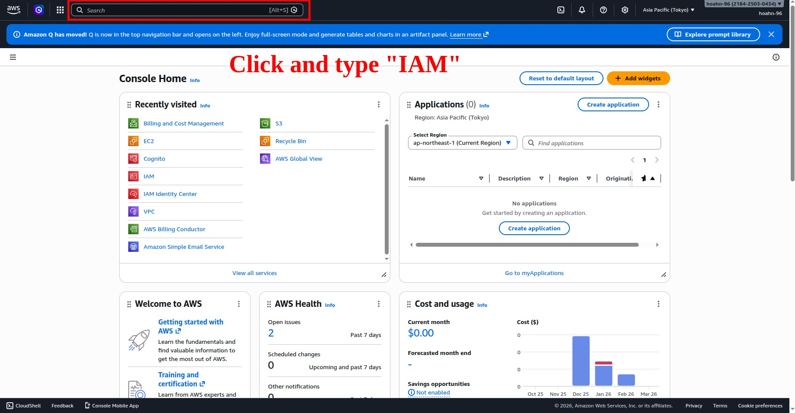
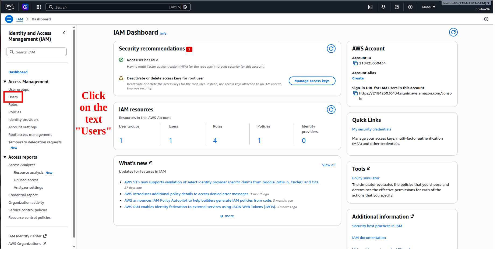
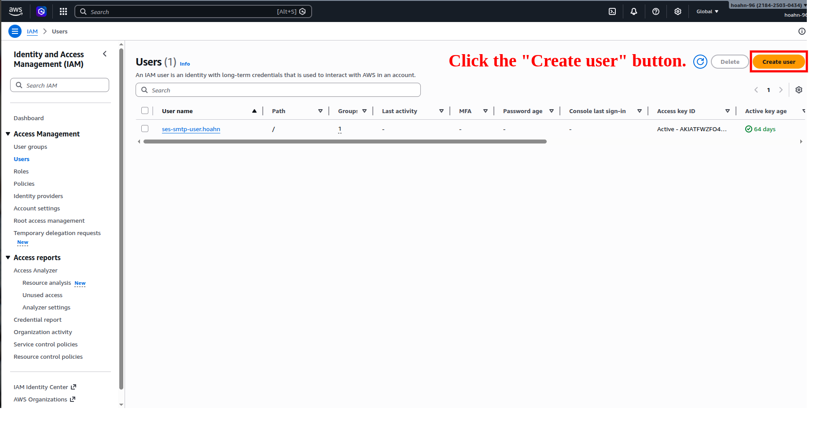
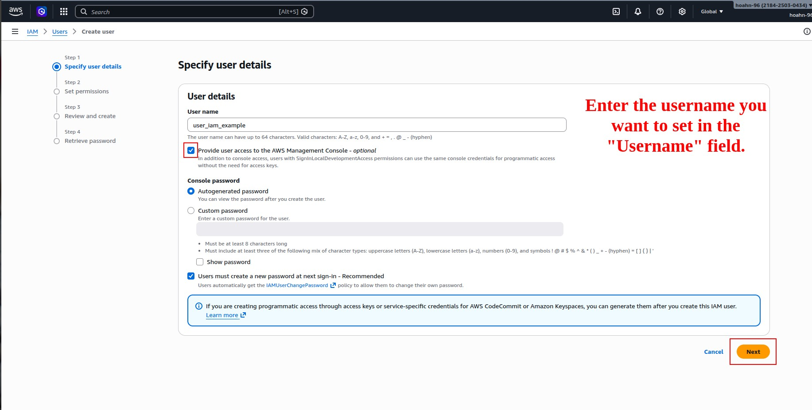
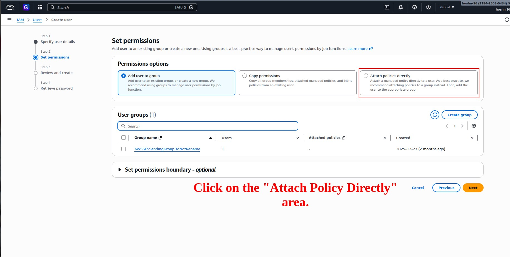
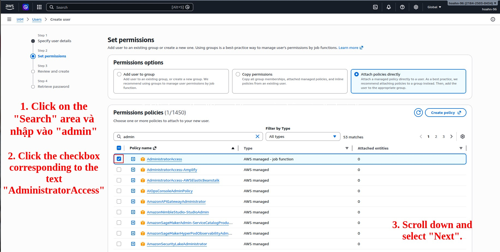
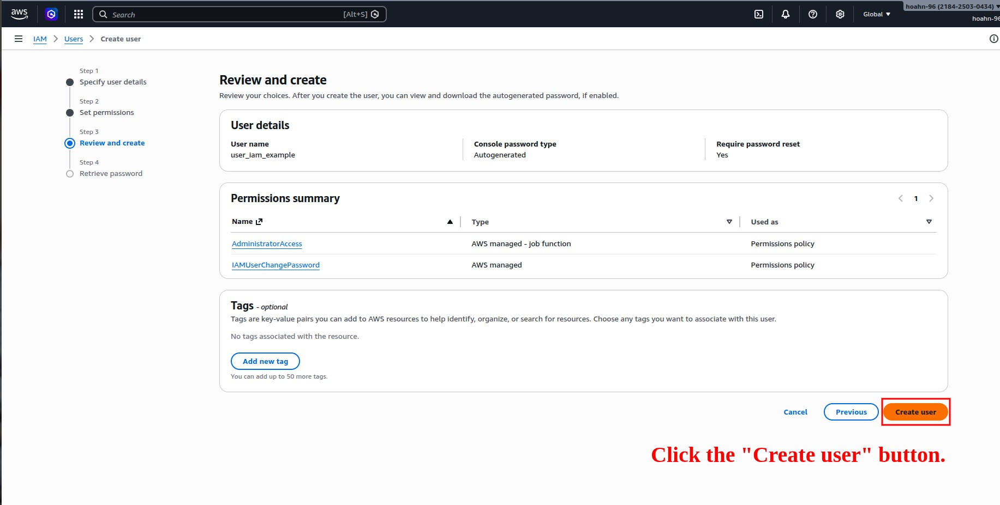
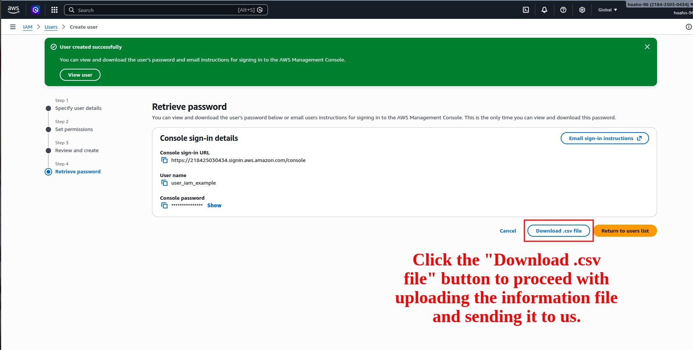

以下は、ログイン後に IAM 画面から非技術者向けにユーザーを作成し、CSV ファイルをダウンロードして送付するための日本語ガイドです。各ステップに対応したスクリーンショットがあります。
AWS マネジメントコンソールにログインします。

左上の検索バーに IAM と入力し、表示された IAM を選択します。

IAM ページでは左側のメニューから Users をクリックすると、既存ユーザーの一覧が表示されます。

一覧上部の Create user ボタンを押して作成を開始します。

新規ユーザーの名前を入力します。
管理コンソールアクセスを与える場合はチェックを入れ、パスワードの自動生成やパスワード変更の初回要求などを設定できます。

「Permissions」ページでは、選択肢が複数あります。
今回は Attach policies directly（ポリシーを直接アタッチ）を選びます。

検索バーに「admin」と入力するとフィルタリングされるので、
表示される AdministratorAccess のチェックボックスをオンにします。

選択したポリシーは一覧に表示されるので、内容を確認したら下部の Next ボタンで次へ進みます。
これまで入力したユーザー名やアタッチしたポリシーが一覧で表示されます。
問題なければ画面右下の Next をクリックし、最終ページの Create user を押します。
しばらくすると確認メッセージとともに、アクセスキー情報が表示されます。

ユーザー作成完了ページで、Download .csv ボタンが見えます。
ここをクリックするとアクセスキーとシークレットキーが含まれた CSV ファイルが自動的にダウンロードされます。
ダウンロード後はファイルを安全に保管し、必要に応じて私たちに送信してください。

以上で完了です。
ユーザーには AdministratorAccess が付与され、CSV ファイルがダウンロードされました。